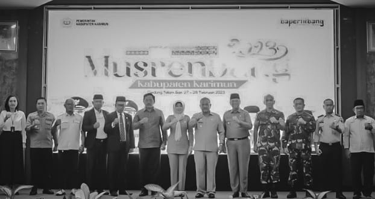

Tentang HIMK
Himpunan Mahasiswa Kundur (HIMK) merupakan sebuah perkumpulan mahasiswa yang berasal dari Tanjungbatu yang menempuh pendidikan S-1 di wilayah Tanjungpinang-Bintan.
Himpunan Mahasiswa Kundur (HIMK) berdiri pada tanggal 23 September 2012 oleh Kakanda Aditya Nugroho Jati. Oleh karena itu, saat ini HIMK telah berusia 11 tahun.
Artikel

Tanjungbatu - Himpunan Mahasiswa Kundur (HIMK) Tanjungpinang-Bintan telah melaksanakan kegiatan tahunan yaitu kegiatan latihan kepemimpinan (LK) tingkat II Gelombang kedua, kegiatan ini dilaksanakan selama 5 hari. Latihan keepemimpinan (LK) tingkat II gelombang kedua ini dilaksanakan dipulau kundur, kabupaten karimun.
Kegiatan ini diikuti oleh 10 peserta, yaitu 3 orang laki laki dan 7 orang perempuan. Tujuan dilaksanakan latihan kepemimpinan tingkat II ini adalah melakukan pengabdian dan penelitian ke masyarakat untuk mencari permasalahan permasalahan yang ada dilingkungan masyarakat, kemudian mahasiswa diharapkan untuk dapat mencari solusi dari permasalahan-permasalahan tersebut.
Sebelum berangkat kami berkumpul distadiun mini sekitar pukul 13:00 wib, dan di berikan arahan sekaligus pembagian kelompok oleh Ketua Umum dan Wakil 1 Himpunan Mahasiswa Kundur, yaitu Kakanda Muslim Hamdi dan Kakanda Randika Saputra sebelum kami berangkat menuju lokasi yang sudah ditetapkan.
Berita

Himpunan Mahasiswa Kundur (HIMK) Tanjungpinang-Bintan Periode 2023-2024 telah melaksanakan kegiatan sosialisasi pengenalan Perguruan Tinggi Negeri, Perguruan Tinggi Swasta, Jalur masuk kuliah serta Beasiswa.
Kegiatan sosialisasi ini ditujukan bagi para siswa/I SMA/SMK/MA yang ada di Pulau Kundur, terutama bagi mereka yang ingin melanjutkan Pendidikan di PTN atau PTS yang ada di Tanjungpinang-Bintan.
Pada kegiatan sosialisasi ke - 12 HIMK mengusung tema “Merajut Asa Menggapai Cita” yang berarti kegiatan ini menjadi upaya dalam mewujudkan harapan serta dorongan penuh semangat kepada calon mahasiswa untuk meraih cita-cita yang mereka inginkan.
Kegiatan ini berlangsung selama enam hari, mulai dari hari Senin, 29 Januari 2024 hingga hari Sabtu, 03 Februari 2024, dengan sasaran kegiatan sosialisasi ini yakni siswa/I kelas 12 yang ada di SMA/SMK/ MA yang ada di Pulau Kundur.
Opini

Beberapa minggu yang lalu di sektor pemerintahan mulai dari desa atau kelurahan dan kecamatan sudah melakukan sebuah amanat Peraturan Menteri Dalam Negeri Nomor 86 Tahun 2017 tentang Perencanaan Evaluasi Pembangunan Daerah.
Hal ini yang kerap disapa oleh masyarakat umum dengan sebutan musyawarah perencanaan pembangunan atau Musrenbang. Musyawarah perencanaan pembangunan ini menurut kalangan masyarakat umum sangat penting untuk menjadi bahan pembahasan langsung bersama kepala daerah yang memimpin daerahnya.